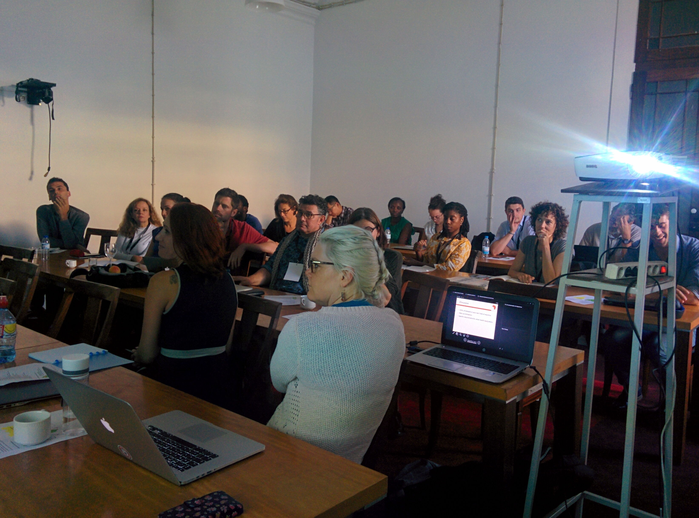

The MAUPP team organized a pre-conference workshop at the International Conference on Urban Health (ICUH 2017) in Coimbra, Portugal in September 2017. The workshop entitled “Human population patterns in sub-Saharan African cities: data and tools for urban health assessments” aimed to demonstrate the potentialities of newly developed data and methods in the field of urban population mapping and modelling for urban health decision making. Our broader objective was to meet potential users of our datasets in order to better design them to user needs and understand user learning requirements to inform our capacity building activities.

The workshop was well attended (25 participants), mostly researchers from universities, some people from international organizations (WHO, ISGlobal, African Population and Health Research Center, John Snow Inc.), NGOs (MSF, Sightsavers) and some policymakers.
Published on October 05, 2017, by Catherine Linard